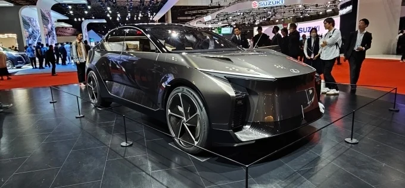
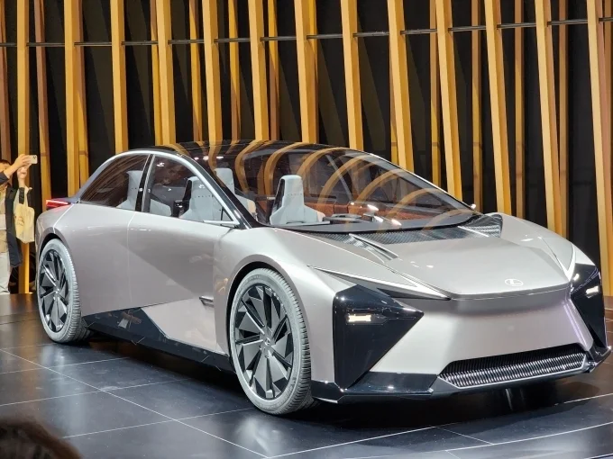
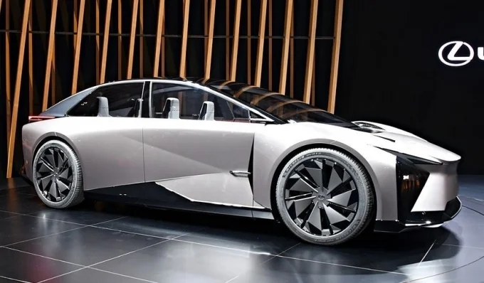
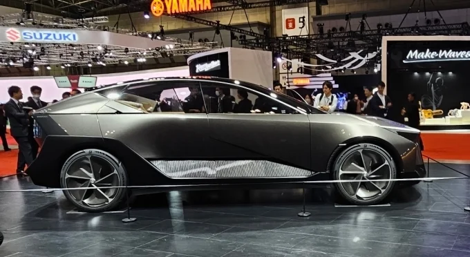

▲ 중국 현지 모터쇼에 전시된 렉서스 ES 500e. 렉서스는 그동안 중국 판매 물량을 전량 일본에서 수출해 왔다 ⓒ CnEVPost
1. 공장이 완공을 눈앞에 두고 있다
렉서스의 중국 상하이 공장이 2025년 6월 착공해 2026년 8월 완공을 앞두고 있다. 생산은 2027년 하반기부터 시작될 예정이다. 초기 월 생산량은 약 1,000대(연 1만 2,000대) 수준으로 잡혀 있고, 2028년부터는 수만 대 규모로 늘어날 전망이다. 공장 자체의 설계 생산능력은 연간 10만 대다.
이 공장은 테슬라에 이어 중국 내 두 번째로 외국 자동차 브랜드가 단독으로 소유하는 완성차 공장이 된다. 그만큼 상징성이 크다는 평가다.
2. 2년 전엔 공식적으로 부인했다
흥미로운 건 이 계획이 처음부터 순탄하게 진행된 게 아니라는 점이다. 2024년, 렉서스 측은 중국에 완전 자체 공장을 설립한다는 보도에 대해 "당분간 계획이 없다"며 공식적으로 부인한 바 있다.
📍 부인에서 착공까지
공식 부인이 나온 지 오래지 않아 실제로는 공장 부지 확보와 착공이 진행됐다. 2025년 6월 착공, 2026년 8월 완공을 앞두고 있는 지금 시점에서 보면, 2024년의 부인은 결과적으로 계획을 감추기 위한 것이었거나 이후 내부 방침이 바뀐 것으로 해석할 수 있다. 다국적 완성차 업체가 신규 해외 생산기지 계획을 초기에 공식 부인했다가 뒤늦게 사실로 확인되는 사례는 드물지 않다.
3. 왜 일본이 아니라 중국인가
도요타·렉서스는 전통적으로 고급 차종을 일본에서 먼저 개발·생산한 뒤 다른 시장으로 확대해 왔다. 이번 상하이 공장은 이 원칙을 깨는 드문 사례다. 차세대 렉서스 BEV를 일본이 아니라 중국에서 먼저 만들기로 한 것이다.
배경에는 압도적인 시장 규모가 있다. 중국의 순수전기차(BEV) 판매량은 2025년 857만 대로 전 세계 판매의 약 60%를 차지했고, 2030년에는 1,141만 대에 이를 것으로 전망된다. 여기에 중국 소비자들이 세단보다 SUV를 뚜렷하게 선호한다는 점도 제품 전략에 반영됐다.

▲ 2023년 재팬 모빌리티쇼에서 공개된 LF-ZL 콘셉트. 풀사이즈급 SUV로, 상하이 공장에서 만들 전기 SUV의 방향성을 짐작하게 한다 ⓒ 오토모닝
4. 무엇을 만드나 — LF-ZC·LF-ZL의 양산형
상하이 공장에서 만들 전기 SUV는 2023년 재팬 모빌리티쇼에서 공개된 콘셉트카 LF-ZC, LF-ZL의 양산 버전으로 이어질 가능성이 거론된다. LF-ZC는 전장 4,750mm의 중형 세단, LF-ZL은 이보다 큰 풀사이즈급 SUV 콘셉트였다.

▲ 함께 공개됐던 LF-ZC 콘셉트 세단. 두 콘셉트 모두 프리즘 구조 고성능 배터리와 기가캐스트 공법을 예고했다 ⓒ 오토모닝

▲ LF-ZC의 후면. 얇고 넓게 이어지는 리어램프가 렉서스 최근 디자인 언어를 반영한다 ⓒ 오토모닝
생산 방식에서 핵심은 '기가캐스트' 공법이다. 여러 개로 나뉘어 있던 알루미늄 차체 부품을 하나의 대형 부품으로 통합 성형하는 기술로, 부품 무게를 최대 20%까지 줄이고 주행거리를 4~5% 늘리는 효과가 있다고 알려졌다.
| 구분 | 내용 |
|---|---|
| 착공 | 2025년 6월 |
| 완공 예정 | 2026년 8월 |
| 생산 시작 | 2027년 하반기 |
| 초기 생산량 | 월 약 1,000대(연 1만 2,000대) |
| 2028년 이후 | 수만 대 규모로 증산 |
| 설계 생산능력 | 연 10만 대 |

▲ LF-ZL의 측면. 낮고 넓은 비례가 특징으로, 중국 소비자들이 선호하는 SUV 체형에 가깝다 ⓒ 오토모닝
5. 그래서 한국에는 들어오나
지금까지 확인된 내용은 '중국 시장을 겨냥한 중국 현지 생산'이다. 렉서스는 2023년 중국에서만 약 18만 대를 팔았는데, 이 물량을 그동안 전량 일본에서 수출해 왔다. 상하이 공장은 이 수출 물량을 현지 생산으로 대체해 비용과 공급 효율을 높이려는 목적이 크다.
✅ 체크포인트
· 상하이 공장 생산분이 중국 외 시장, 특히 한국으로 수출될 계획이 있는지는 현재까지 공식적으로 확인되지 않았다
· LF-ZC·LF-ZL이 실제 양산형의 정확한 기반이 되는지는 아직 공식화되지 않았다
· 2024년 부인과 2026년 진행 상황이 상충되는 만큼, 최종 가동 시점은 추가 변동 가능성이 있다
6. 정리
렉서스의 중국 상하이 공장은 2026년 8월 완공을 앞두고 있으며, 2027년 하반기부터 전기 SUV를 생산해 2028년 이후 수만 대 규모로 늘릴 계획이다. 도요타가 고급 차종을 일본이 아닌 해외에서 먼저 생산하는 드문 사례로, 2024년의 공식 부인과 배치되는 전개라는 점도 눈에 띈다. 다만 지금까지 확인된 내용은 중국 내수용 생산 체제 전환이며, 한국을 포함한 다른 시장으로의 확대 여부는 아직 공식화되지 않았다.